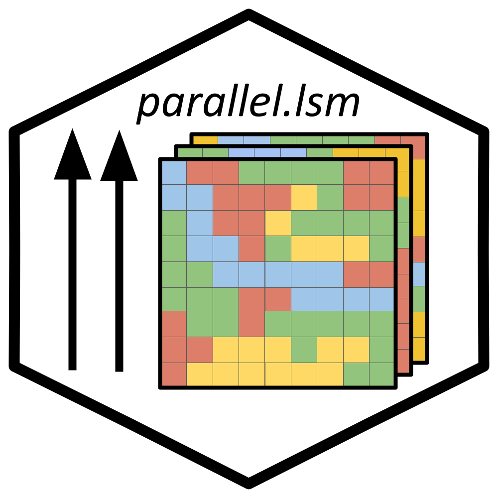

Run landscapemetrics Functions in Parallel
Source: R/para_lsm.R, R/lsm_funcs.R
parallel.lsm.RdRun landscapemetrics functions across multiple processes at the same time.
parallel.lsm() can be used to call any chosen function. Other parallel functions
are functionally identical but with the func argument already specified internally.
Usage
parallel.lsm(..., func, split_on)
parallel.calculate_correlation(..., split_on)
parallel.calculate_lsm(..., split_on)
parallel.check_landscape(..., split_on)
parallel.construct_buffer(..., split_on)
parallel.data_info(..., split_on)
parallel.extract_lsm(..., split_on)
parallel.get_adjacencies(..., split_on)
parallel.get_area_patches(..., split_on)
parallel.get_boundaries(..., split_on)
parallel.get_centroids(..., split_on)
parallel.get_circumscribingcircle(..., split_on)
parallel.get_class_patches(..., split_on)
parallel.get_complexity(..., split_on)
parallel.get_enn_patch(..., split_on)
parallel.get_nearestneighbour(..., split_on)
parallel.get_patches(..., split_on)
parallel.get_perimeter_patch(..., split_on)
parallel.get_points(..., split_on)
parallel.get_unique_values(..., split_on)
parallel.landscape_as_list(..., split_on)
parallel.list_lsm(..., split_on)
parallel.lsm_c_ai(..., split_on)
parallel.lsm_c_area_cv(..., split_on)
parallel.lsm_c_area_mn(..., split_on)
parallel.lsm_c_area_sd(..., split_on)
parallel.lsm_c_ca(..., split_on)
parallel.lsm_c_cai_cv(..., split_on)
parallel.lsm_c_cai_mn(..., split_on)
parallel.lsm_c_cai_sd(..., split_on)
parallel.lsm_c_circle_cv(..., split_on)
parallel.lsm_c_circle_mn(..., split_on)
parallel.lsm_c_circle_sd(..., split_on)
parallel.lsm_c_clumpy(..., split_on)
parallel.lsm_c_cohesion(..., split_on)
parallel.lsm_c_contig_cv(..., split_on)
parallel.lsm_c_contig_mn(..., split_on)
parallel.lsm_c_contig_sd(..., split_on)
parallel.lsm_c_core_cv(..., split_on)
parallel.lsm_c_core_mn(..., split_on)
parallel.lsm_c_core_sd(..., split_on)
parallel.lsm_c_cpland(..., split_on)
parallel.lsm_c_dcad(..., split_on)
parallel.lsm_c_dcore_cv(..., split_on)
parallel.lsm_c_dcore_mn(..., split_on)
parallel.lsm_c_dcore_sd(..., split_on)
parallel.lsm_c_division(..., split_on)
parallel.lsm_c_ed(..., split_on)
parallel.lsm_c_enn_cv(..., split_on)
parallel.lsm_c_enn_mn(..., split_on)
parallel.lsm_c_enn_sd(..., split_on)
parallel.lsm_c_frac_cv(..., split_on)
parallel.lsm_c_frac_mn(..., split_on)
parallel.lsm_c_frac_sd(..., split_on)
parallel.lsm_c_gyrate_cv(..., split_on)
parallel.lsm_c_gyrate_mn(..., split_on)
parallel.lsm_c_gyrate_sd(..., split_on)
parallel.lsm_c_iji(..., split_on)
parallel.lsm_c_lpi(..., split_on)
parallel.lsm_c_lsi(..., split_on)
parallel.lsm_c_mesh(..., split_on)
parallel.lsm_c_ndca(..., split_on)
parallel.lsm_c_nlsi(..., split_on)
parallel.lsm_c_np(..., split_on)
parallel.lsm_c_pafrac(..., split_on)
parallel.lsm_c_para_cv(..., split_on)
parallel.lsm_c_para_mn(..., split_on)
parallel.lsm_c_para_sd(..., split_on)
parallel.lsm_c_pd(..., split_on)
parallel.lsm_c_pladj(..., split_on)
parallel.lsm_c_pland(..., split_on)
parallel.lsm_c_shape_cv(..., split_on)
parallel.lsm_c_shape_mn(..., split_on)
parallel.lsm_c_shape_sd(..., split_on)
parallel.lsm_c_split(..., split_on)
parallel.lsm_c_tca(..., split_on)
parallel.lsm_c_te(..., split_on)
parallel.lsm_l_ai(..., split_on)
parallel.lsm_l_area_cv(..., split_on)
parallel.lsm_l_area_mn(..., split_on)
parallel.lsm_l_area_sd(..., split_on)
parallel.lsm_l_cai_cv(..., split_on)
parallel.lsm_l_cai_mn(..., split_on)
parallel.lsm_l_cai_sd(..., split_on)
parallel.lsm_l_circle_cv(..., split_on)
parallel.lsm_l_circle_mn(..., split_on)
parallel.lsm_l_circle_sd(..., split_on)
parallel.lsm_l_cohesion(..., split_on)
parallel.lsm_l_condent(..., split_on)
parallel.lsm_l_contag(..., split_on)
parallel.lsm_l_contig_cv(..., split_on)
parallel.lsm_l_contig_mn(..., split_on)
parallel.lsm_l_contig_sd(..., split_on)
parallel.lsm_l_core_cv(..., split_on)
parallel.lsm_l_core_mn(..., split_on)
parallel.lsm_l_core_sd(..., split_on)
parallel.lsm_l_dcad(..., split_on)
parallel.lsm_l_dcore_cv(..., split_on)
parallel.lsm_l_dcore_mn(..., split_on)
parallel.lsm_l_dcore_sd(..., split_on)
parallel.lsm_l_division(..., split_on)
parallel.lsm_l_ed(..., split_on)
parallel.lsm_l_enn_cv(..., split_on)
parallel.lsm_l_enn_mn(..., split_on)
parallel.lsm_l_enn_sd(..., split_on)
parallel.lsm_l_ent(..., split_on)
parallel.lsm_l_frac_cv(..., split_on)
parallel.lsm_l_frac_mn(..., split_on)
parallel.lsm_l_frac_sd(..., split_on)
parallel.lsm_l_gyrate_cv(..., split_on)
parallel.lsm_l_gyrate_mn(..., split_on)
parallel.lsm_l_gyrate_sd(..., split_on)
parallel.lsm_l_iji(..., split_on)
parallel.lsm_l_joinent(..., split_on)
parallel.lsm_l_lpi(..., split_on)
parallel.lsm_l_lsi(..., split_on)
parallel.lsm_l_mesh(..., split_on)
parallel.lsm_l_msidi(..., split_on)
parallel.lsm_l_msiei(..., split_on)
parallel.lsm_l_mutinf(..., split_on)
parallel.lsm_l_ndca(..., split_on)
parallel.lsm_l_np(..., split_on)
parallel.lsm_l_pafrac(..., split_on)
parallel.lsm_l_para_cv(..., split_on)
parallel.lsm_l_para_mn(..., split_on)
parallel.lsm_l_para_sd(..., split_on)
parallel.lsm_l_pd(..., split_on)
parallel.lsm_l_pladj(..., split_on)
parallel.lsm_l_pr(..., split_on)
parallel.lsm_l_prd(..., split_on)
parallel.lsm_l_relmutinf(..., split_on)
parallel.lsm_l_rpr(..., split_on)
parallel.lsm_l_shape_cv(..., split_on)
parallel.lsm_l_shape_mn(..., split_on)
parallel.lsm_l_shape_sd(..., split_on)
parallel.lsm_l_shdi(..., split_on)
parallel.lsm_l_shei(..., split_on)
parallel.lsm_l_sidi(..., split_on)
parallel.lsm_l_siei(..., split_on)
parallel.lsm_l_split(..., split_on)
parallel.lsm_l_ta(..., split_on)
parallel.lsm_l_tca(..., split_on)
parallel.lsm_l_te(..., split_on)
parallel.lsm_p_area(..., split_on)
parallel.lsm_p_cai(..., split_on)
parallel.lsm_p_circle(..., split_on)
parallel.lsm_p_contig(..., split_on)
parallel.lsm_p_core(..., split_on)
parallel.lsm_p_enn(..., split_on)
parallel.lsm_p_frac(..., split_on)
parallel.lsm_p_gyrate(..., split_on)
parallel.lsm_p_ncore(..., split_on)
parallel.lsm_p_para(..., split_on)
parallel.lsm_p_perim(..., split_on)
parallel.lsm_p_shape(..., split_on)
parallel.matrix_to_raster(..., split_on)
parallel.pad_raster(..., split_on)
parallel.points_as_mat(..., split_on)
parallel.prepare_extras(..., split_on)
parallel.proj_info(..., split_on)
parallel.raster_to_points(..., split_on)
parallel.rcpp_get_nearest_neighbor(..., split_on)
parallel.sample_lsm(..., split_on)
parallel.scale_sample(..., split_on)
parallel.spatialize_lsm(..., split_on)
parallel.unpad_raster(..., split_on)
parallel.window_lsm(..., split_on)Arguments
- ...
arguments passed to
func.- func
function. A function from the landscapemetrics package.
- split_on
character. Names of arguments in
...to split between workers. Multiple arguments can be specified. Arguments must be formatted as lists. Each element in the list will be given to a different worker. The number of groups data is split into must be less than or equal to the number of available CPU cores, which can be checked usingparallelly::availableCores(). It is generally recommended to use n-1 or n-2 cores compared to the total available.